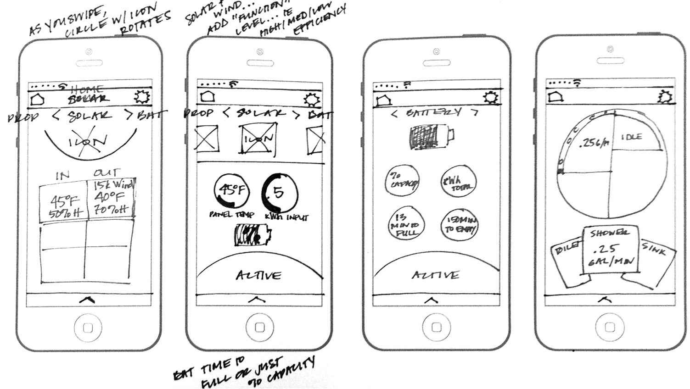

Prototyping
Personal project / Bird Nerd
Bird Nerd is a mobile app that records and automatically identify bird songs or calls in the field. Users can also upload, tag and share bird sightings into a database.
Bird Nerd is a mobile app that records and automatically identify bird songs or calls in the field. Users can also upload, tag and share bird sightings into a database.

Bird Nerd provides a dynamic and fun learning experience that will help increase knowledge and awareness of bird conservation in New Zealand.
In 2014 friends working across the natural resources sector approached me to help come up with visual designs for an app concept they were pitching as part of the Aspiring Leadership Programme (ALP), an annual event that brings together a diverse group of committed and courageous young leaders from across Aotearoa New Zealand.
Our initial plan was to produce a series of simple wireframes that the team could present, we later felt that wireframes alone were not enough to communicate what the team wanted to build and decided to develop a high fidelity prototype instead which included UI components and interactivity.
New Zealand has around 68 species of endemic birds, most of which have distinct songs and calls. However, recognising even a few birds from calls is difficult for most people.
Using ‘cloud’ based computation, Bird Nerd allows users to record and identify bird songs and calls. Each time the app is used, data is collected and stored. This data will be publicly available through a website enabling individuals, communities, school groups, conservation groups, scientists and government agencies to help aid the conservation effort.
The primary objectives of Bird Nerd are to enable Kiwis to easily identify native New Zealand birds, foster greater connection with the natural environment through education and engagement and Use innovative technologies to facilitate connection to the outdoors.

For this case study, I decided to focus on developing one user story — registration and login.
Wireframing was essential in making sure the prototype started in the right direction. Base on the content provided by the team from ALP, I brainstormed and created sketches using pen and paper. These sketches were done quickly and gave me a good idea of what functionality and content were required for the prototype.
I then converted the sketches into digital wireframes using Sketch App. Using Sketch UI kits, I was able to quickly produce vector based wireframes with familiar UI features like keypads and status bars which I could easily share and receive feedback.

Combining Sketch App and Photoshop, the wireframes were then transformed into hi-fidelity mockups which included color, typography, graphics and other visual elements. Utilising Sketch’s artboard feature, I rapidly iterated and experimented with different design variations and layouts.
The landing page has been designed to allow users quick access to primary functions of the application. The interface design aims to be minimal and uncluttered without any unnecessary elements. I opted to not use any images or photography and instead choose a minimal approach, using only one color (red) which contrasted against the green and earthy colors of the forest where the app would primarily be used.


To better communicate the app’s interactions, transitions, and user flows to potential stakeholders, I experimented with different prototyping tools such as Auxure, Atomic, and Framer. All had their pros and cons. I found Framer very powerful because it was based on javascript (Coffeescript) and you could have a lot of control but you needed to invest a little time in learning. Talk about Auxure and Atomic.